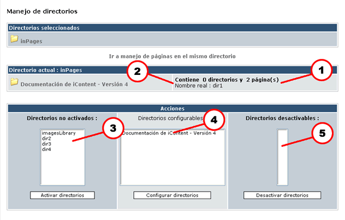
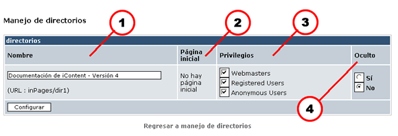

La siguiente es una pantalla típica de la sección de manejo de directorios:

Figura 1. Las tablas para Manejo de directorios
En la parte superior de la imagen puedes ver una tabla llamada "Directorios seleccionados". Contiene la estructura jerárquica de directorios, desde el directorio raíz, "inPages", hasta el directorio final que hayas seleccionado, de modo que en esta tabla se observa siempre la ruta seguida hasta el directorio actual. Otra manera de verlo es la siguiente: el último directorio que se vea en esta tabla es el directorio actual. La siguiente tabla contiene los directorios "hijos" del directorio actual. Entre ambas tablas hay una liga que te permite navegar directamente hasta la administración de páginas en el mismo directorio en que te encuentres.
En el título de la segunda tabla está inscrito el nombre del directorio actual, y en seguida se muestra, a la izquierda, la lista de directorios contenidos en el actual, pero, y esto es muy importante, sólo se muestran aquellos directorios con el estatus de activados. Volveremos sobre este punto más adelante. Naturalmente, los directorios no activados no se mostrarán en esta tabla, que reproduce la estructura visible al usuario.
En la columna derecha de esta tabla hay datos sobre cada carpeta de la izquierda (véanse los indicadores 1 y 2):
Nota: Es posible desplegar el URL completo de un directorio dejando por unos momentos el apuntador del ratón sobre el nombre del directorio. Esto hará que aparezca el URL físico en el servidor Web.
Para acceder al contenido de un directorio, basta con hacer clic sobre su nombre.
Esta tabla enlista todas las acciones que puedes ejecutar sobre los directorios contenidos en el directorio actual.
La siguiente es la lista de comandos a tu disposición:
Para activar un directorio deberás haber activado previamente todos los directorios padres que pueda tener. Luego, usando el explorador de iContent, navega hasta el directorio padre de aquel que deseas activar. Verás entonces, en la tabla "Acciones", en la columna de la extrema izquierda (Indicador 3 de la Figura 1), una lista. En esta lista encontrarás el directorio que quieres activar (tendrá el mismo nombre que le has dado al directorio físico en tu servidor Web). Selecciónalo y después haz clic sobre el botón "Activar directorios". De inmediato tu directorio estará activado (y aparecerá en la columna central de la misma tabla). Ahora podrás configurarlo, por ejemplo para cambiar el nombre que despliega. El nombre por defecto es el nombre físico que tiene el directorio en el servidor.
Para configurar un directorio deberás haberlo activado previamente, y después navegar hasta su directorio padre, donde verás la tabla "Acciones" en su columna central (Indicador 4 de la Figura 1). Selecciona el o los directorio(s) que quieras configurar (el nombre desplegado será el que le has dado a cada directorio a través de esta opción de configuración), y después haz clic sobre el botón "Configurar directorios". Esta es una imagen de la pantalla que verás:

Figura 2. La tabla que aparece cuando eliges Configurar directorios.
Para desactivar un directorio tendrás que haberlo activado previamente. Desactivar un directorio no lo borrará del servidor, pero dejará de mostrarlo en el explorador de iContent. Para poder desactivar un directorio, es necesario que no contenga directorios o páginas activos. Por lo tanto, para desactivar un directorio será necesario que desactives antes todos los directorios y páginas que contenga. Para la desactivación en sí, navega hasta el directorio padre del directorio que quieres desactivar, y mira en la tabla "Acciones", en la columna de la extrema derecha (Indicador 4 de la Figura 1). Ahí verás la lista de directorio susceptibles de desactivación (es decir, aquellos que no tienen directorios ni páginas activos). Elige el directorio a desactivar y haz clic en el botón "Desactivar directorios". El directorio quedará inmediatamente desactivado.